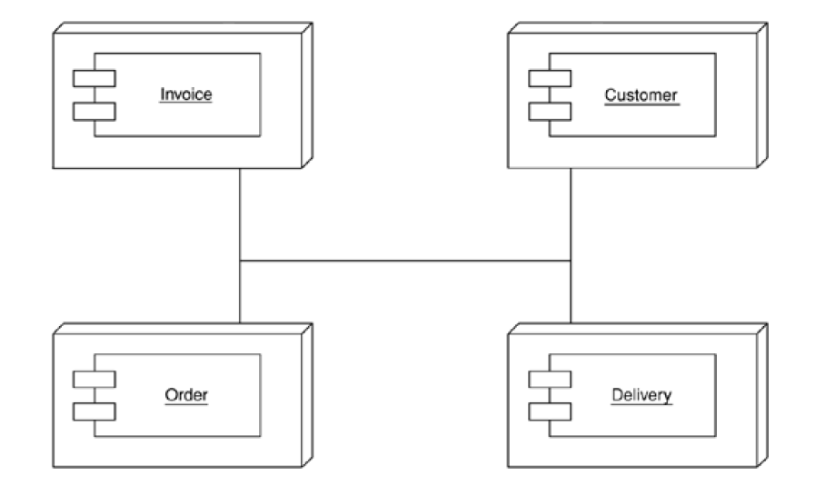

Patterns of Enterprise Application Architecture
Chapter 5. Concurrency
Chapter 7. Distribution Strategies
Objects have been around for a while, and sometimes it seems that, ever since they were created, folks have wanted to distribute them. However, distribution of objects, or indeed of anything else, has a lot more pitfalls than many people realize [Waldo et al.], especially when they're under the influence of vendors' cozy brochures. This chapter is about some of these hard lessons I've seen many of my clients learn the hard way.
The Allure of Distributed Objects
There is a recurring presentation that I used to see two or three times a year during design reviews. Proudly the system architect of a new OO system lays out his plan for a new distributed object system—let's pretend it's a some kind of ordering system. He shows me a design that looks rather like Figure 7.1. With separate remote objects for customers, orders, products, and deliveries. Each one is a separate component that can be placed on a separate processing node.
Figure 7.1. Distribute an application by putting different components on different nodes.
I ask, "Why do you do this?"
"Performance, of course," the architect replies, looking at me a little oddly. "We can run each component on a separate box. If one component gets too busy we add extra boxes for it so we can load-balance our application." The look is now curious as if he wonders if I really know anything about real distributed object stuff at all.
Meanwhile I'm faced with an interesting dilemma. Do I just say out and out that this design sucks like an inverted hurricane and get shown the door immediately? Or do I slowly try to show my client the light? The latter is more remunerative but much tougher since the client is usually very pleased with his architecture, and it takes a lot to give up on a fond dream.
So assuming you haven't shown this book the door I guess you'll want to know why this distributed architecture sucks. After all, many tool vendors will tell you that the whole point of distributed objects is that you can take a bunch of objects and position them as you like on processing nodes. Also, their powerful middleware provides transparency. Transparency allows objects to call each other within a process or between a process without having to know if the callee is in the same process, in another process, or on another machine.
Transparency is valuable, but while many things can be made transparent in distributed objects, performance isn't usually one of them. Although our prototypical architect was distributing objects the way he was for performance reasons, in fact his design will usually cripple performance, make the system much harder to build and deploy, or, usually, do both.